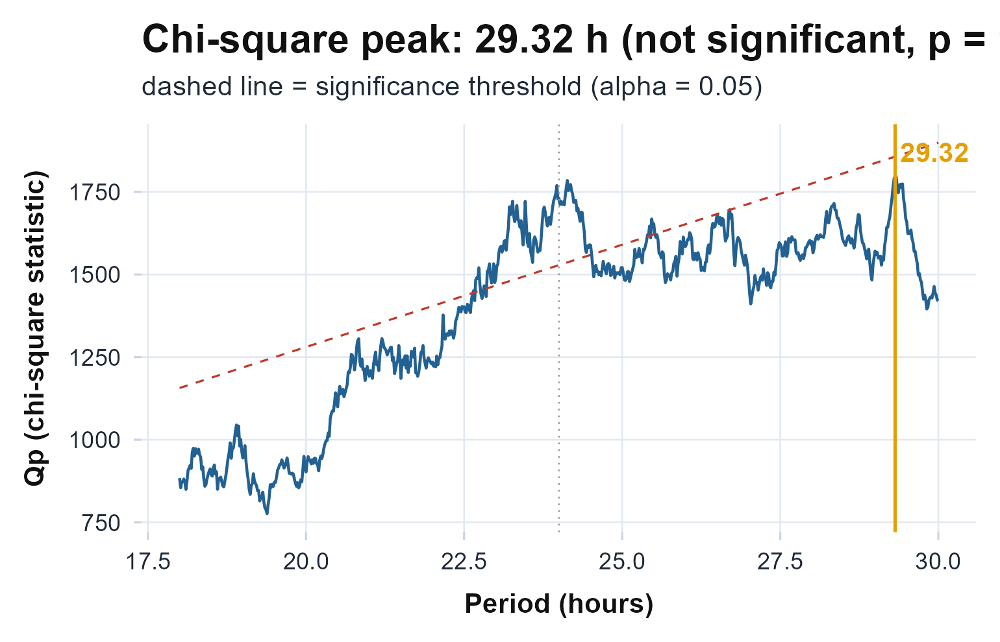
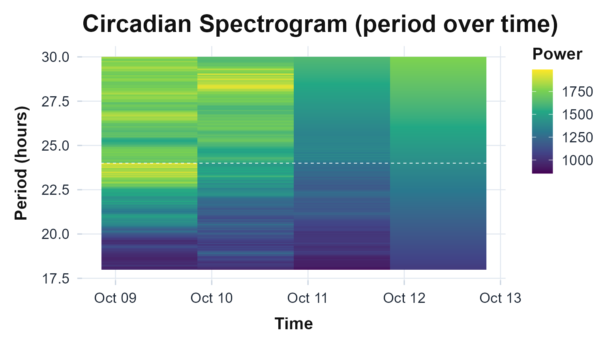
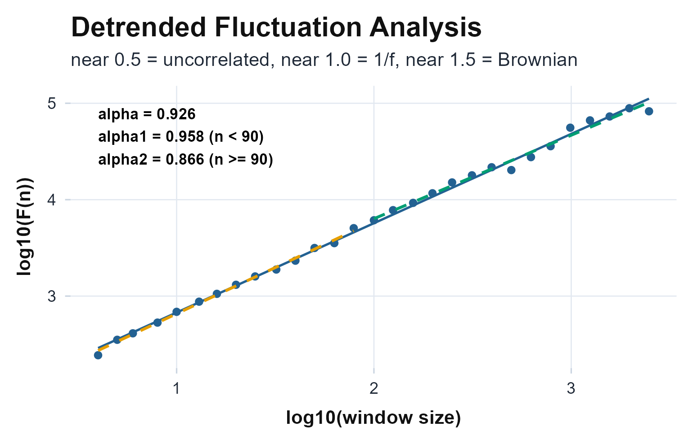
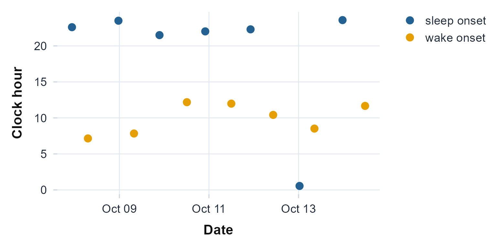
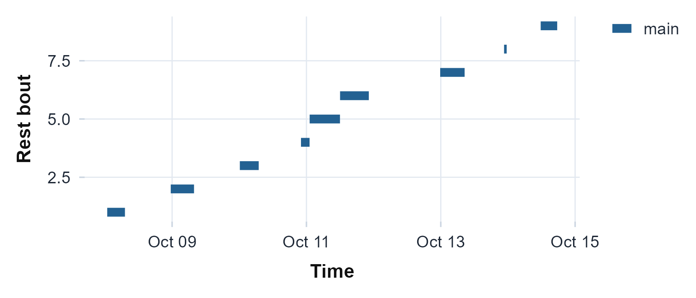

You have an ActiGraph recording for one person and a practical question. Does this person have a stable daily rhythm, how strong is it, and is it real or could it be noise? This article answers that question end to end on one bundled recording. By the end you will be able to read the file, describe the rhythm without assuming a shape, test whether it is real, locate and bound its period, probe its finer structure, and write out a one-row summary you can stack across people.
The method assumes a multi-day activity-count series with timestamps,
which is what an ActiGraph .agd file holds and what counts
exported from any source can supply. Every number and figure below is
reproducible from the installed package.
The recording
read.agd() opens the .agd SQLite file and
auto-detects the epoch length and axes; agd.counts()
returns a tidy data frame with $axis1 (the vertical-axis
counts) and $timestamp. One recording ships with the
package, reached through example_agd().
agd <- agd.counts(read.agd(example_agd(1), verbose = FALSE))
head(agd[, c("timestamp", "axis1")])
#> timestamp axis1
#> 1 2025-10-07 20:28:00 2676
#> 2 2025-10-07 20:29:00 1380
#> 3 2025-10-07 20:30:00 4126
#> 4 2025-10-07 20:31:00 5763
#> 5 2025-10-07 20:32:00 4076
#> 6 2025-10-07 20:33:00 4043Read the actogram top to bottom before computing anything. It is the fastest way to see whether there is a rhythm to measure at all.
plot_actogram(agd$axis1, agd$timestamp)
Double-plotted actogram: each row is one day shown twice across 48 hours, so a stable rhythm forms a vertical band of activity at the same clock time each day; scattered fill marks a fragmented or shifting rhythm.
In this recording the active rows do not stack into one clean vertical band; they slide a little later or earlier from day to day, which is the low interdaily stability the next section puts a number on.
The nonparametric rhythm
circadian.rhythm() describes the rest-activity pattern
without assuming a waveform. It returns interdaily stability (IS) and
intradaily variability (IV), introduced by Witting et al. (1990), together with the relative
amplitude (RA) and the least- and most-active windows L5 and M10 of
Van Someren et al. (1999), each with its onset
time.
rhythm <- circadian.rhythm(agd$axis1, agd$timestamp)
rhythm
#>
#> Circadian Rhythm Analysis
#>
#> Data Summary
#> Days analyzed: 8
#> Valid circadian days: 6
#> Epoch length: 60 seconds
#>
#> Non-Parametric Metrics (IS/IV: Witting et al. 1990; RA/L5/M10: van Someren et al. 1999)
#> L5 (least active 5h): 6.10 counts/min, onset 01:28
#> M10 (most active 10h): 602.93 counts/min, onset 12:02
#> L1 (least active 1h): 3.10 counts/min, onset 02:35
#> M1 (most active 1h): 1175.51 counts/min, onset 17:43
#> Relative Amplitude (RA): 0.9800 (range 0-1, higher=stronger rhythm)
#> Interdaily Stability (IS): 0.2279 (range 0-1, higher=more consistent)
#> Intradaily Variability (IV): 1.0008 (near 0 = sine, near 2 = noise)
#> Phi (autocorrelation): 0.4151 (higher=more predictable)
#>
#> Sleep-Based & Variability Metrics
#> Sleep Regularity Index: Not calculated (requires sleep_state input)
#> Onset timing variability: 2.23 hours
#> L5 timing variability: 0.77 hours (circular SD)
#> M10 timing variability: 3.70 hours (circular SD)
#>
#> References: Witting (1990), van Someren (1999)Read the three headline numbers together. IS ranges 0 to 1 and rises
as the daily pattern repeats more exactly from day to day; IV runs from
about 0 (a smooth sine) to about 2 (noisy or split into ultradian
bouts); RA ranges 0 to 1 and grows with the contrast between an active
day and a restful night. Here a high RA (about 0.98) sits with a low IS
(about 0.23): a strong day-night contrast carried on irregular timing.
The header also notes that six of the eight calendar days qualified,
because circadian.rhythm() sets aside days with too little
valid recording before computing the metrics.
Cosinor and the rhythmicity test
cosinor.analysis() fits a 24-hour cosine and returns the
MESOR (rhythm-adjusted mean), amplitude, and acrophase, the clock time
of the peak (Cornelissen, 2014).
cos <- cosinor.analysis(agd$axis1, agd$timestamp, period = 24)
c(mesor = unname(cos$mesor), amplitude = unname(cos$amplitude),
acrophase = unname(cos$acrophase))
#> mesor amplitude acrophase
#> 327.25 295.63 16.92The acrophase is circular: it is a clock time, so
23.5 and 0.5 are an hour apart, not 23 hours apart, and it is only
interpretable once the amplitude is distinguishable from zero.
rhythmicity.test() is that check, the zero-amplitude F-test
of Nelson et al. (1979), reported with the percent of
variance the rhythm explains.
rhythmicity.test(agd$axis1, agd$timestamp, cosinor_result = cos)
#> Cosinor Rhythmicity Test (Halberg zero-amplitude F-test)
#>
#> H0: amplitude = 0 (no rhythm)
#> Period: 24 h
#> F(2, 21): 8.15
#> P-value: 0.0024
#> Percent rhythm: 43.7% (R-squared = 0.4371)
#> Rhythmic: YES (alpha = 0.05)A small p-value rejects the flat-line null. Here the test is clearly significant (p well under 0.05) and the single cosine explains a little over forty percent of the variance, so the acrophase above is worth reading. The percent-rhythm also reminds you that the rest of the variance, more than half, is a mix of noise and structure a single cosine cannot capture. Overlay the fit to see what it is and is not catching.
plot_extended_cosinor(agd$axis1, agd$timestamp)
Hourly activity with the fitted 24-hour cosine overlaid; the peak of the curve is the acrophase and its height above the MESOR line is the amplitude. Systematic departures from the curve are where a single cosine is too smooth for real rest-activity data.
Look where the fitted curve and the hourly points part company: the
single cosine runs too smooth through the early hours, and that gap is
the structure the percent-rhythm says one cosine leaves on the table.
When you need the joint uncertainty in amplitude and acrophase together,
cosinor.confidence.ellipse(cos) returns the Bingham et al. (1982) ellipse; an ellipse that
encloses the origin is the geometric form of “no detectable rhythm”.
The period
A cosinor assumes exactly 24 hours. circadian.period()
does not: it runs a Lomb-Scargle periodogram over the 18 to 30 hour band
and returns the dominant period tau, with a false-alarm
probability in $p_value (Baluev, 2008; Lomb,
1976; Scargle, 1982).
per <- circadian.period(agd$axis1, agd$timestamp)
c(tau = per$tau, p_value = per$p_value)
#> tau p_value
#> 2.543077e+01 9.388299e-97The strongest cycle here sits near 25.4 hours, meaningfully longer
than a solar day, and the false-alarm probability is essentially zero,
so the cycle itself is not in doubt. Its exact length is less certain.
period.ci() refines that peak and bootstraps it with a
circular block bootstrap (Kunsch, 1989; Politis & Romano, 1992), which
respects the autocorrelation in activity data. The interval it returns
is wide enough to span 24 hours. On a single recording the period is
clearly present but not pinned to the hour. Passing
seed = 1 makes the bootstrap reproducible; the 50
replicates here keep the vignette fast, and a real interval would use
more.
period.ci(agd$axis1, agd$timestamp, n_boot = 50, seed = 1)
#> Circadian Period with Bootstrap Confidence Interval
#>
#> tau: 24.980 h
#> 95% CI: [23.484, 26.342] h
#> SE: 1.220 h
#> Method: circular block residual bootstrap (50/50 valid reps)
plot_periodogram(agd$axis1, agd$timestamp)
Lomb-Scargle spectral power across candidate periods; the tallest peak is the dominant rhythm, and a peak rising above the significance line rejects the no-rhythm null.
The chi-square periodogram of Sokolove & Bushell (1978) asks the same question a different way, scoring each trial period by how much of the variance folds onto it. A second estimator that clears its own threshold at the same period is reassurance that the peak is real rather than an artifact of one method.
plot_chisq(agd$axis1, agd$timestamp)
Chi-square (Sokolove-Bushell) periodogram: the Qp statistic against trial period, with the significance threshold. The peak should fall at the period the Lomb-Scargle periodogram found.
Watching the period drift
A single periodogram averages over the whole recording.
circadian.spectrogram() slides a window across it and
recomputes the periodogram in each, so you can see the dominant period
move, the chronobiology equivalent of a music spectrogram.
circadian.spectrogram(agd$axis1, agd$timestamp, step_hours = 24)$plot
Period (vertical) against time (horizontal), coloured by spectral power. A horizontal band of colour is a stable period; a band that bends upward or downward is a rhythm lengthening or shortening across the recording.
Follow the band of colour left to right: here it drifts upward, the dominant period lengthening across the recording rather than holding at 24 hours. Read the later windows with some caution, since they ride the upper edge of the search band, where a weakening rhythm and a genuinely longer period can look alike.
Nonlinear structure
Two recordings can share the same IS and amplitude yet differ in
their moment-to-moment dynamics. fractal.dfa() estimates
the detrended-fluctuation exponent alpha, the long-range temporal
correlation in the series (Hu et al., 2001; Peng et
al., 1994).
fractal.dfa(agd$axis1)$alpha
#> [1] 0.9263546An alpha near 1 is the “1/f” scaling typical of healthy physiological output; near 0.5 is uncorrelated noise; well above 1 is a smoother, more random-walk-like signal. Here alpha comes out near 0.93, close to the 1/f end, so this series carries genuine long-range correlation rather than looking like noise. The log-log fit shows whether one exponent holds across all time scales.
plot_dfa(agd$axis1)
Detrended fluctuation on log-log axes; the slope is the DFA exponent alpha. One straight line is monofractal scaling, a visible kink is a crossover between short- and long-range dynamics.
Two further questions use the same series and a single call each.
multiscale.entropy() asks how the complexity of the signal
changes as you coarse-grain it across time scales (Costa et al.,
2002), and mfdfa() asks whether one scaling
exponent is enough or the series is genuinely multifractal (Kantelhardt et al.,
2002). Their help pages carry the math, and the Beyond
the basics article runs them on this recording; here it is enough to
know they refine, not replace, the single alpha above.
Rest-activity transitions
state.transitions() summarises how readily the subject
switches between rest and activity, the kRA (rest-to-active) and kAR
(active-to-rest) rates that capture fragmentation a single amplitude
cannot (Lim et al.,
2011).
st <- state.transitions(agd$axis1)
c(kRA = st$kRA, kAR = st$kAR)
#> kRA kAR
#> 0.03920806 0.10681627For this subject kAR runs well above kRA: once active they settle back to rest quickly, but once at rest they stay there. That asymmetry is the fragmentation a single amplitude cannot see.
Pinpointing sleep and wake
state.transitions() gives one pair of rates for the
whole recording. sleep.changepoints() instead locates the
sleep-onset and wake-onset of each night directly from the counts, with
no scored sleep required: a 24-hour cosinor bounds each rest and active
span roughly, and a change point inside each bound places the precise
transition (Chen &
Sun, 2024).
cp <- sleep.changepoints(agd$axis1, agd$timestamp)
cp
#> Change-Point Sleep/Wake Detection (CircaCP)
#>
#> Span: 6.9 days (9919 epochs)
#> Cosinor acrophase: 20.5 h
#> Change points: 14 (7 sleep episodes)
#> Mean sleep duration: 11.1 h
#>
#> First sleep episodes:
#> sleep 10-07 22:36 -> wake 10-08 07:09 (8.6 h)
#> sleep 10-08 23:30 -> wake 10-09 07:50 (8.3 h)
#> sleep 10-09 21:30 -> wake 10-10 12:11 (14.7 h)
#>
#> Reference: Chen and Sun (2024)
cps <- cp$changepoints
cps$clock <- as.numeric(format(cps$time, "%H")) + as.numeric(format(cps$time, "%M")) / 60
ggplot(cps, aes(time, clock, colour = type)) +
geom_point(size = 3) +
scale_colour_manual(values = c("sleep onset" = "#236192", "wake onset" = "#E69F00")) +
labs(x = "Date", y = "Clock hour", colour = NULL) +
theme_actiRhythm()
Each detected sleep onset (blue) and wake onset (orange) by date and clock time. The detector reads the per-night sleep and wake timing directly from the counts.
For this recording the detector finds seven nights, sleep onset late in the evening and wake onset around seven in the morning, with most nights near eight to nine hours of rest. That is the per-night sleep and wake timing the single transition rate above cannot localise.
Every rest bout, naps included
sleep.changepoints() finds the one main rest bout of
each cycle. rest.periods() takes the complementary view,
consolidating every spell of low activity into a rest bout, however many
a day holds, daytime naps and fragmented rest included (Roenneberg et al.,
2015). Each epoch is compared to a fraction of its own
24-hour activity level, and runs that stay below it grow into
consolidated bouts.
rp <- rest.periods(agd$axis1, agd$timestamp)
rp
#> Consolidated Rest Periods (Roenneberg/MASDA)
#>
#> Bouts detected: 9 (1.5 per day over 6 days)
#> Total rest: 61.3 h
#> Main bouts / naps: 9 / 0
#>
#> First bouts:
#> main 10-08 00:49 -> 10-08 07:09 (381 min)
#> main 10-08 23:31 -> 10-09 07:50 (500 min)
#> main 10-10 00:12 -> 10-10 06:57 (406 min)
#>
#> Reference: Roenneberg et al. (2015); Loock et al. (2021)
ggplot(rp$rest_periods, aes(onset, bout, xend = offset, yend = bout, colour = type)) +
geom_segment(linewidth = 3) +
scale_colour_manual(values = c(main = "#236192", nap = "#E69F00")) +
labs(x = "Time", y = "Rest bout", colour = NULL) +
theme_actiRhythm()
Each consolidated rest bout as a bar from onset to offset. Detecting more than one bout a day, including naps, is what separates this from the one-per-cycle change-point detector.
For this recording it consolidates nine rest bouts across six days, more than one a day, so a few days carry a second rest beyond the main night.
rest.crespo() reaches a comparable result by a different
route, rank-order filtering and binary morphology rather than
seed-and-grow consolidation (Crespo et al., 2012); running both
gives an independent cross-check of where a recording’s rest bouts fall.
Neither applies a wear-time filter, so gate the counts on valid wear
first if a recording has device-off stretches.
Scoring sleep and its regularity
The metrics so far describe the rhythm; the next need a per-epoch
sleep or wake label. sleep.cole.kripke() produces that
label directly from the counts, the standard count-based classifier for
adults (Cole et al.,
1992), with sleep.sadeh() as the
children-and-adolescents alternative.
state <- sleep.cole.kripke(agd$axis1)
table(state)
#> state
#> S W
#> 7646 2273Count-based scoring labels every low-activity epoch as sleep, so a
mostly sedentary recording scores a high sleep fraction; what matters
downstream is how regular that label is from day to day.
sleep.regularity.index() measures exactly that, the
probability that two epochs 24 hours apart share the same state (Phillips et al.,
2017).
sleep.regularity.index(state, agd$timestamp)
#> [1] 58.46When you also have explicit sleep periods,
social.jet.lag() returns the work-day to free-day mid-sleep
difference (Wittmann
et al., 2006) and lids() the locomotor
inactivity during sleep that tracks ultradian sleep structure (Winnebeck et al.,
2018).
Pooling the evidence
Each test above answers “is there a rhythm?” in its own language.
consensus.rhythmicity() runs four of them, the cosinor
F-test, the Bingham ellipse, the Lomb-Scargle false-alarm probability,
and the chi-square periodogram, and reports both a majority vote and a
Fisher-combined p-value (Fisher, 1925).
consensus.rhythmicity(agd$axis1, agd$timestamp)
#> Consensus Rhythmicity (multi-method)
#>
#> cosinor F-test p=0.0024 rhythmic
#> Bingham ellipse rhythmic
#> Lomb-Scargle FAP p=<2e-16 rhythmic
#> chi-square periodogram p=1 no
#>
#> Votes: 3 / 4 methods
#> Fisher p: <2e-16
#> Consensus: RHYTHMIC (alpha = 0.05)For this recording three of the four tests agree that a rhythm is present and the Fisher-combined p-value is effectively zero, so the evidence leans firmly toward a real rhythm even where one method on its own might hesitate. Read that combined p-value as indicative rather than exact, though: the four tests run on the same series, so they are not independent, which is the assumption Fisher’s method rests on.
A one-row summary
A one-row summary is then easy to assemble and rbind()
across subjects.
data.frame(
IS = rhythm$IS,
IV = rhythm$IV,
RA = rhythm$RA,
tau = per$tau,
amplitude = cos$amplitude,
acrophase = cos$acrophase,
dfa_alpha = fractal.dfa(agd$axis1)$alpha
)
#> IS IV RA tau amplitude acrophase dfa_alpha
#> cos_term 0.2279 1.0008 0.98 25.43077 295.63 16.92 0.9263546Read across, this row is one person: a strongly amplitude-modulated rhythm whose timing is irregular from day to day, running on a period a little over 24 hours.
A whole study at once
You have now run the whole arc on one recording, ending with a single
summary row. Most studies, though, are a folder of recordings rather
than one, and that is what circadian.batch() is for. It
runs this entire arc over every .agd file in a directory
and returns one row per recording, so a cohort becomes a single data
frame you can model. A file that fails to read is reported in an
error column instead of stopping the run. The package ships
two recordings, so this runs as a real, if small, batch.
batch <- circadian.batch(
system.file("extdata", package = "actiRhythm"),
verbose = FALSE
)
batch[, c("file", "IS", "IV", "RA", "period_tau", "rhythm_p_value")]
#> file IS IV RA period_tau rhythm_p_value
#> 1 MOS2E39230594_60sec.agd 0.2279 1.0008 0.9800 25.43077 0.002396228
#> 2 MOS2E3923063660sec.agd 0.4230 1.2687 0.7706 24.09425 0.050151893Each row is one subject, described by the same metrics as the walkthrough above, and already the two differ: the second is steadier from day to day (higher IS) but less amplitude-modulated (lower RA), and its rhythm clears significance only at the margin. Point the call at your own folder and nothing else changes.
When you want the full analysis for a single recording rather than a
summary row, circadian.workbook() writes every table to a
multi-sheet Excel file: a summary row plus the hourly profile, both
periodograms, the fluctuation and multifractal spectra, and a data
dictionary.
circadian.workbook(agd$axis1, agd$timestamp, file = "subject01.xlsx")Where next
- Decomposition, the multi-harmonic profile, and the finer nonparametric and phase metrics are demonstrated in Beyond the basics.
- Reading raw
.gt3x/.cwa/.binfiles, calibration, the ENMO/MAD/z-angle metrics, and diary-free posture-based sleep are in From raw acceleration. - When a rhythm drifts, shifts phase, or fragments across the recording, see Nonstationary and complex rhythms.
-
?circadian.rhythm,?cosinor.analysis,?circadian.period,?fractal.dfa,?consensus.rhythmicitygive the per-function help with full references. -
?circadian.batchand?circadian.workbookare the study-scale entry points. - For a multi-subject design,
population.cosinor()andcosinor.compare()give the mean rhythm and a two-group test (Bingham/Hotelling); for covariates, repeated measures, or nesting, feed the per-subject metrics this package emits (MESOR, amplitude, acrophase, IS, IV, RA, period) into a mixed model withlme4/nlmealongside your design. The package gives you the metrics; you supply the multilevel model. - Cite the package with
citation("actiRhythm"), and reportpackageVersion("actiRhythm")with your results so the analysis stays reproducible across releases. - Questions and bugs: https://github.com/rdazadda/actiRhythm/issues.